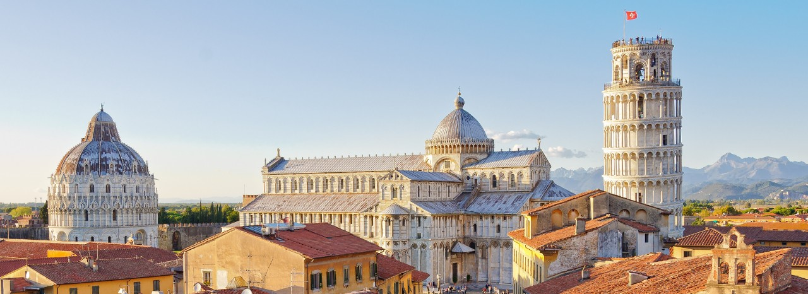
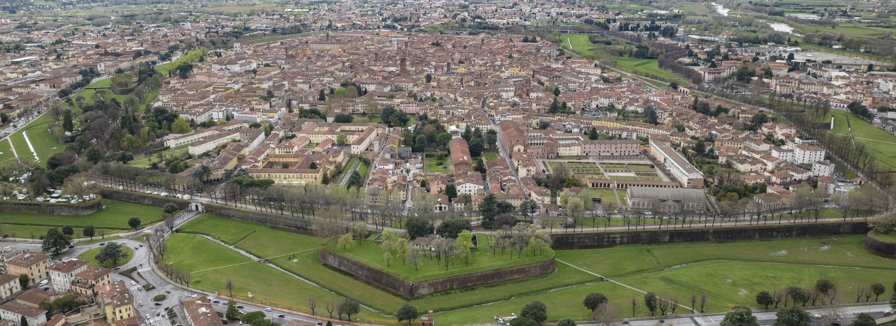
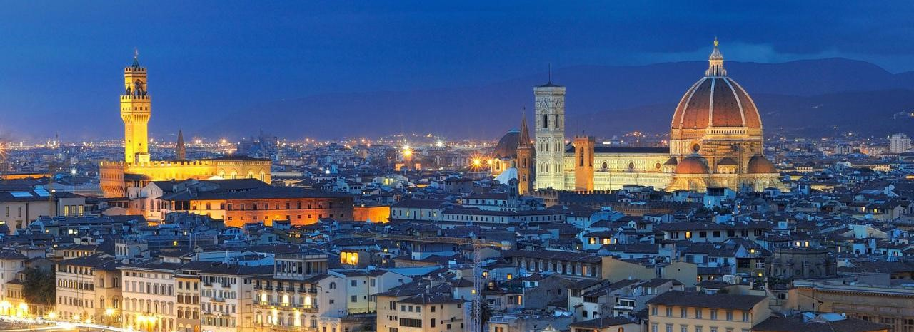

CITIES
PISA
Pisa, nestled in the picturesque region of Tuscany, beckons visitors with its timeless charm and iconic landmarks. The focal point is the awe-inspiring Leaning Tower , a symbol of architectural marvel situated in the renowned Piazza dei Miracoli. Adjacent to it stands the majestic Cathedral of Santa Maria Assunta, complemented by the exquisite Baptistery and the historic Camposanto Monumentale.
For a serene escape, the enchanting Scotto Garden provides a tranquil retreat amidst nature within the city. Meanwhile, the National Museum of San Matteo showcases a diverse array of artistic treasures, including captivating paintings, sculptures, and invaluable medieval artifacts.
Beyond its architectural wonders, Pisa is also known for its vibrant university scene, adding a dynamic cultural flair to the city. Whether exploring the leaning beauty or immersing oneself in cultural and historical treasures, Pisa promises a captivating journey through time and art.
Wikipedia Pisa Best parking for visiting PisaDistances : 37 min - 47 km
LUCCA
Lucca, a medieval city surrounded by majestic Renaissance walls, offers a captivating journey through time. The Duomo di San Martino dominates the skyline with its magnificent Romanesque façade, while the Torre Guinigi provides a unique panoramic view of the city from above, surrounded by oak trees.
Strolling through the narrow cobblestone streets, you'll encounter picturesque corners like the Roman Amphitheatre, an oval square that preserves the ancient spirit of Rome. The Palazzo Pfanner, with its Baroque gardens, and the Church of San Michele in Foro, with its elegant façade, add further architectural charm.
Lucca is also renowned for its well-preserved walls, offering a wonderful panoramic walk or bike ride around the historic center. With its relaxed atmosphere and historical riches, Lucca enchants visitors with its timeless beauty.
Wikipedia Lucca Best parking for visiting LuccaDistances : 22 min - 24,3 km
Firenze
Florence, the cultural gem of Tuscany, offers an extraordinary experience through its rich artistic and historical heritage. The Duomo of Santa Maria del Fiore, with its imposing Brunelleschi's dome, dominates the cityscape, while Giotto's bell tower and the Baptistery complete the iconic Piazza del Duomo.
At the heart of Florence lies the Uffizi Gallery, a treasure trove of Renaissance masterpieces by artists such as Leonardo da Vinci and Michelangelo. Crossing the Arno River, the Ponte Vecchio with its artisan shops is a unique icon. The majestic Palazzo Vecchio in Piazza della Signoria attests to the greatness of Medici power.
Florence is also the cradle of Renaissance art, with the Accademia Gallery housing Michelangelo's renowned David. For a peaceful retreat, the Boboli Gardens offer a charming landscape of statues and fountains.
With its cobblestone streets and priceless artistic treasures, Florence is an unmissable destination for art and history enthusiasts.
Distances : 57 min - 56 km
Best parking for visiting Florence. Using the tram to get to the centreDistances : 33 min - 52,4 km